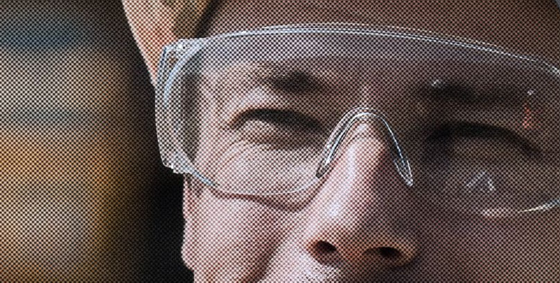

{{ L.kicker }}
{{ L.title }}

{{ L.imgCap }}
{{ L.p1 }}
{{ L.p2 }}
{{ L.p3 }}
{{ p.tag }}
{{ p.title }}
{{ p.desc }}

0
+
{{ L.expTitle }}
{{ L.expBody }}
// {{ L.traitsKicker }}
{{ L.traitsTitle }}
{{ t.label }}